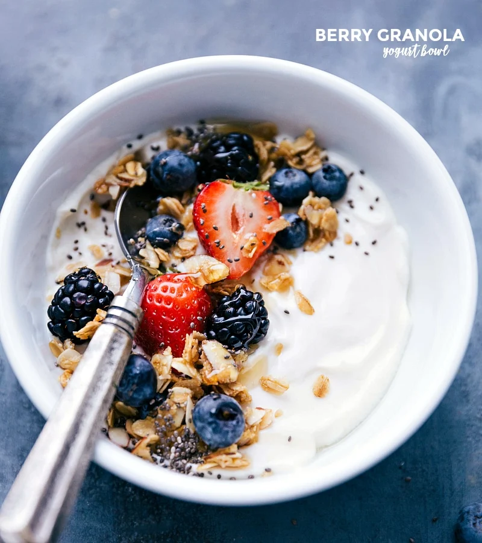

Yogurt Bowl

Description
This delicious yogurt bowl is extremely easy and quick to make while maintaining your healthy diet. A great start to anyone's day to get you full of energy!
Ingredients
- 3/4 cup Honey Vanilla Greek Yogurt
- 1/2 cup mixed berries of any variety
- 2-3 tablespoons of granola
- 1-2 tablespoons sliced almonds or similar nuts
Steps
- Add yogurt to a bowl and smooth the top with a spoon
- Add berries on top and finish with some granola as well.
- Enjoy your healthy breakfast!